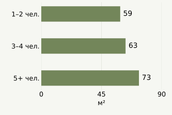
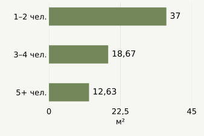

Вопрос аналитика.
Проверяемая справка.
Помощник для аналитика, которому нужно разобраться в формах обследования и подготовить таблицу с обоснованным выводом.
Один запрос → один законченный результат
Пример рабочего поручения аналитику
«Подготовь справку о жилищных условиях домохозяйств из 1–2, 3–4 и 5+ человек за 2024 год. Покажи общую площадь, площадь на человека и ограничения расчёта».
Ответ по учебной выборке
В группе 5+ человек медиана общей площади выше: 73 м² против 59 м² у домохозяйств из 1–2 человек. При этом медиана площади на человека ниже: 12,63 м² против 37 м².
Это описание синтетического массива. Деление площади на размер домохозяйства само влияет на сравнение; результат не доказывает причину различий или жилищную нуждаемость.
| Размер | Домохозяйств | Медиана площади, м² | Медиана м² на человека |
|---|---|---|---|
| 1–2 чел. | 4 435 | 59 | 37 |
| 3–4 чел. | 3 973 | 63 | 18,67 |
| 5+ чел. | 3 296 | 73 | 12,63 |
Общая площадь жилья

Площадь на человека

Как проверить этот ответ
В расчёте 11 704 домохозяйства с данными о жилье. В карточках состава есть ещё 296 домохозяйств без соответствующей строки жилья. Они не включены в сравнение, а неполный охват явно показан.
У 46 записей жилая площадь больше общей. Эти значения требуют сверки. Главная таблица сохраняет их: противоречие не устанавливает, какое поле ошибочно. Отдельно проверено, насколько меняется результат без этих записей.
Влияние 46 спорных записей на результат
Медианы общей площади остаются 59, 63 и 73 м². Ниже — чувствительность медианы площади на человека. Исключение показано как дополнительный сценарий, не как установленное исправление.
| Группа | Все, м²/чел. | Без спорных, м²/чел. | Исключено |
|---|---|---|---|
| 1–2 | 37 | 37 | 8 |
| 3–4 | 18,67 | 18,67 | 11 |
| 5+ | 12,63 | 12,67 | 27 |
Данные, формулы и ограничения
D006: d006/2024/rio_2024.csv, поле общей площади OB_PL. D008: d008/2024/kontr_k.csv, ключи NOMER + NOMP. Определения — структуры D006 и D008 в документации конкурсного архива.
Сначала число разных членов домохозяйства рассчитывается по D008. Затем одна строка состава на домохозяйство соединяется с одной строкой жилья по NOMER внутри 2024 года. Площадь на человека рассчитывается для каждого домохозяйства: OB_PL / число членов. В таблице — медиана этих отношений, а не отношение медиан.
- Синтетический конкурсный массив: результаты не являются оценками населения Казахстана.
- Невзвешенные описательные показатели; причинные выводы и перенос на население не обоснованы.
- Площадь на человека математически зависит от размера домохозяйства; сравнение не доказывает причинную связь.
- Медиана индивидуально рассчитанных отношений не равна отношению медиан.
- J_PL > OB_PL — диагностическое противоречие, не подтверждение того, какое значение ошибочно.
- Домохозяйства только из D008 не входят в анализ жилья; это ограничение охвата, не установленная ошибка.
- ИИ-планировщик не подключён; это воспроизводимый пример расчётного ядра.
Предлагаемый сценарий ассистента
Наше предложение: Residual — ассистент подготовки проверяемых аналитических справок по обследованиям домохозяйств. Первая версия ограничена жилищными условиями и одним периодом.
- Аналитик формулирует поручение. Например, сравнение жилищных условий нескольких групп.
- ИИ предлагает план. Выбирает поля из документации, единицу анализа, показатель и группировки. Неоднозначный запрос уточняет; недоступный показатель не выдумывает.
- Проверенный код выполняет расчёт. Проверяет ключи, применимость плана и охват данных. Сохраняет формулы и источники каждого результата.
- Аналитик получает справку. Таблица, график, описательный вывод, ограничения и воспроизводимый расчёт. План остаётся видимым и проверяемым.
Где полезен именно ИИ
Помогает перевести обычную формулировку поручения в корректную работу с незнакомыми статистическими формами. Этот выбор переменных и плана станет предметом отдельной проверки.
Повторное использование готовых компонентов
Загрузку данных, проверку ключей, основания и контроль качества. Они помогают оценить достоверность справки. Очередь аномалий становится дополнительным инструментом, а не главным результатом.
Готового подключения языковой модели сейчас нет. Табличный расчёт этого образца выполнен детерминированным кодом. Уже создан локальный MCP-прототип: совместимый клиент может получить каталог, проверить фиксированный план и вызвать этот расчёт. Обмен с официальным MCP-клиентом проверен; с конкретной языковой моделью — ещё нет.
Организация управляет моделью и доступом к данным
Это требования к следующей версии, а не заявление о готовом ведомственном внедрении. Справка остаётся главным результатом; модели и каналы подключения обслуживают один расчётный процесс.
Выбор места работы модели
Локально: разрешённая модель на компьютере или сервере организации.
Через API: утверждённый внешний поставщик и модель.
Смешанный режим: вычисления внутри организации; наружу передаётся только явно разрешённая часть запроса и результата.
Правила действуют независимо от модели
Перечень разрешённых моделей, какие данные можно передавать, ограничения затрат и журнал запусков задаются отдельно. Переключение на внешний сервис при сбое локального не происходит автоматически.
Вопрос пользователя тоже может содержать закрытые сведения. Даже агрегированная таблица требует проверки допустимости передачи.
Один расчёт — разные рабочие интерфейсы
- Веб-интерфейс: вопрос, проверяемый план, таблица и справка.
- Локальный MCP: инструменты каталога, предварительного плана и расчёта для совместимого ИИ-клиента. Модель выбирает клиент; сервер сам модель не запускает.
- Рабочая система организации: отдельный адаптер после уточнения её интерфейса и прав доступа.
- Telegram, WhatsApp и почта: возможные дополнительные каналы; требуют самостоятельной настройки, проверки пользователя и правил выдачи результатов. Сейчас не подключены.
Локальное расположение MCP-сервера не гарантирует локальность всей обработки: его ответы может получить облачная модель клиента. Текущий прототип расчёта возвращает агрегаты, но не реализует ведомственную систему доступа и защиты статистической конфиденциальности.
Проверяемые свойства расчётного процесса
Модель формирует план из допустимых операций. Недопустимое соединение форм или другой год блокируются. У каждой цифры видны источник и формула. При замене модели один и тот же одобренный план исполняется тем же расчётным модулем — числа должны совпадать. Это проверяемые свойства, а не обещание общей «уникальности».
Проверка сценария
Предлагаемый процесс: вопрос → данные и переменные → план → расчёт → таблицы и графики → ограничения. Здесь рассматривается ограниченный вариант этой последовательности. MCP, выбор поставщика модели и мессенджеры — дополнительные способы подключения.
| Свойство процесса | Способ проверки |
|---|---|
| Анализ, программирование, ИИ | Выбор переменных и плана моделью, исполнение расчёта кодом, проверка обоих этапов |
| Визуализация | Готовая справка и живая демонстрация от поручения до результата |
| Особенности метода | Знание структуры форм, прозрачное происхождение чисел, защита от ошибочных соединений и знаменателей |
| Методология и выводы | Верный расчёт, влияние спорных записей, ограничения синтетики и повторяемый результат |
Как проверим следующую версию
До проверки фиксируем набор из 20 запросов: разные формулировки поддерживаемых задач, неоднозначные вопросы и запросы, на которые данных нет. Проверяем выбор полей, группировки, расчёт и корректный отказ. Это проверка качества ассистента; экономия времени сотрудника БНС потребует будущего пилота.